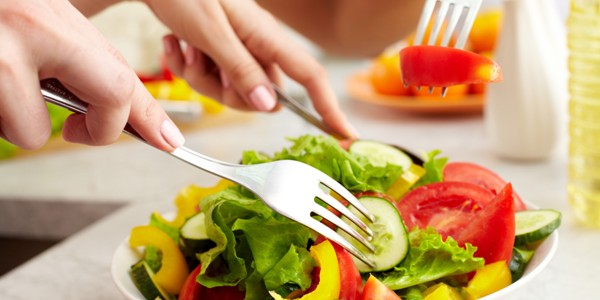

Lihat Golongan Darah : A B AB O
Hal ini ditemukan oleh Naturopathic Physician Peter D'Adamo yang memetakan diet pada golongan darah. Teorinya yang ditemukannya mengatakan bahwa setiap golongan darah mengandung antigen yang unik, antigen adalah zat yang menyebabkan sistem kekebalan tubuh untuk memproduksi antibodi terhadap penanda. Sehingga, memiliki kecenderungan untuk bereaksi buruk dengan makanan tertentu. Alhasil menyebabkan masalah kesehatan yang potensial.
"Golongan darah berkembang pada waktu yang berbeda sepanjang sejarah. Kita harus makan diet berdasarkan jenis makanan yang berdasarkan nenek moyang kita biasanya makan pada saat itu," ujar Peter D'Adamo seperti dikutip Times of India. Peter D'Adamo mengklasifikasikan makanan menjadi tiga golongan utama, yaitu makanan yang tergolong sangat baik (disarankan), netral yang tidak akan memberikan efek negatif terhadap golongan darah (diijinkan), dan yang terakhir adalah golongan makanan yang membahayakan (dihindari).
Diet makanan golongan darah O
Golongan darah O merupakan golongan darah paling kuno dalam sejarah manusia. Gen untuk golongan darah O berkembang pada suatu titik ketika peradaban manusia beralih dari hidup berburu dan berpindah-pindah ke komunitas agraris yang menetap di suatu tempat.
Diet: Makanan tinggi protein & kurangi karbohidrat.
Golongan darah O lebih baik mengkonsumsi protein tinggi untuk program dietnya. Seafood adalah beberapa jenis makanan yang termasuk kategori sangat baik untuk dikonsumsi. Anda juga sebaiknya mengonsumsi jenis makanan dari sayuran hijau. Makanan lain seperti ikan tuna, sardine, tempe, tahu, daging, ayam, dan susu kedelai adalah beberapa jenis makanan yang bersifat netral bagi golongan darah O. Hindarilah sayuran seperti, terong, kentang, jamur, dan tauge atau jenis sayuran yang mengandung banyak lektin. Karakteristiknya adalah:
Golongan Darah O: Rendah karbohidrat dan tinggi protein
Diet makanan golongan darah A
Golongan darah A merupakan manusia pertama yang menjalankan aktifitas pertanian karena nenek moyang sudah tinggal menetap dan tidak lagi suka berperang.
Diet: Makanan berkarbohidrat tinggi & kurangi lemak.
Golongan darah A sangat cocok untuk menjadi seorang vegetarian. Orang dengan jenis golongan darah ini dianjurkan untuk memperbanyak konsumsi buah dan sayur ketimbang makan daging merah, daging bebek, kelinci, seafood seperti udang, cumi dan lobster, juga jenis makanan tinggi lemak seperti keju, susu, es krim dan makanan tinggi karbohidrat, contohnya ubi.
Menu makanan menurut golongan darah ini masih diperbolehkan mengonsumsi jenis ikan seperti salmon, tuna dan makanan laut lainnya yang mengandung omega tinggi. Jika rutin berolah raga santai juga akan sangat membantu menjaga kestabilan kadar darah selama diet. Karakteristiknya adalah:
Golongan darah A: Rendah lemak dan tinggi karbohidrat
Diet makanan golongan darah B
Kunci golongan darah B adalah keseimbangan. Orang bergolongan darah B tumbuh dan berkembang baik melalui apa yang telah disediakan oleh dunia hewan dan tumbuhan. Artinya golongan darah B menunjukan kemampuan yang canggih dalam perjalanan evolusinya.
Diet: Susu & produk susu. Golongan darah ini terkait dengan sistem kekebalan yang kuat dan sistem pencernaan yang fleksibel. Golongan darah B memiliki tingkat antibodi yang paling tinggi diantara golongan darah yang lain, sehingga orang dengan golongan darah B umumnya akan jarang terserang penyakit. Oleh karena itu, D'Adamo menyarankan orang golongan darah B baik mengkonsumsi susu. Jenis makanan yang dikonsumsi selama diet bagi pemilik golongan darah B tidak terlalu banyak batasan. golongan darah B boleh minum yogurt, makan jenis-jenis ikan, sayur hijau, telur dan sumber nabati lainnya. Karakteristiknya adalah:
Golongan Darah B: Susu dan produk olahan susu
Diet makanan golongan darah AB
Golongan darah AB merupakan golongan darah yang paling modern dan berusia kurang dari 1.000 tahun, jarang (5 % dari jumlah populasi), dan bersifat kompleks secara biologis. Karena anda membawa anti gen A dan B.
Diet: Dapat menyesuaikan diri dengan berbagai jenis makanan.Golongan darah yang termasuk perantara golongan darah A dan B ini merupakan jenis golongan darah yang misterius dan unik. Orang dengan golongan darah AB dapat menyesuaikan diri dengan berbagai makanan. Hal ini jauh lebih mudah daripada orang dengan golongan darah lain. Sehingga, konsumsi daging dan sayuran yang berimbang akan berdampak sangat baik bagi golongan darah AB. Karakteristiknya adalah:
Golongan darah AB: Segala jenis makanan